昨天我们学习了Elasticsearch的基本应用。今天就学以致用，搭建搜索微服务，实现搜索功能。
创建module：
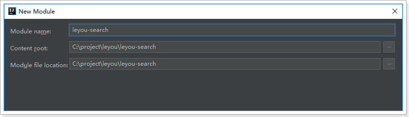
Pom文件：
<?xml version="1.0" encoding="UTF-8"?>
<project xmlns="http://maven.apache.org/POM/4.0.0"
xmlns:xsi="http://www.w3.org/2001/XMLSchema-instance"
xsi:schemaLocation="http://maven.apache.org/POM/4.0.0 http://maven.apache.org/xsd/maven-4.0.0.xsd">
<parent>
<artifactId>leyou</artifactId>
<groupId>com.leyou.parent</groupId>
<version>1.0.0-SNAPSHOT</version>
</parent>
<modelVersion>4.0.0</modelVersion>
<groupId>com.leyou.search</groupId>
<artifactId>leyou-search</artifactId>
<version>1.0.0-SNAPSHOT</version>
<dependencies>
<!-- web -->
<dependency>
<groupId>org.springframework.boot</groupId>
<artifactId>spring-boot-starter-web</artifactId>
</dependency>
<!-- elasticsearch -->
<dependency>
<groupId>org.springframework.boot</groupId>
<artifactId>spring-boot-starter-data-elasticsearch</artifactId>
</dependency>
<!-- eureka -->
<dependency>
<groupId>org.springframework.cloud</groupId>
<artifactId>spring-cloud-starter-netflix-eureka-client</artifactId>
</dependency>
<!-- feign -->
<dependency>
<groupId>org.springframework.cloud</groupId>
<artifactId>spring-cloud-starter-openfeign</artifactId>
</dependency>
</dependencies>
</project>application.yml：
server:
port: 8083
spring:
application:
name: search-service
data:
elasticsearch:
cluster-name: elasticsearch
cluster-nodes: 192.168.56.101:9300
eureka:
client:
service-url:
defaultZone: http://127.0.0.1:10086/eureka
instance:
lease-renewal-interval-in-seconds: 5 # 每隔5秒发送一次心跳
lease-expiration-duration-in-seconds: 10 # 10秒不发送就过期
prefer-ip-address: true
ip-address: 127.0.0.1
instance-id: ${spring.application.name}:${server.port}启动类：
@SpringBootApplication
@EnableDiscoveryClient
@EnableFeignClients
public class LySearchService {
public static void main(String[] args) {
SpringApplication.run(LySearchService.class, args);
}
}接下来，我们需要商品数据导入索引库，便于用户搜索。
那么问题来了，我们有SPU和SKU，到底如何保存到索引库？
大家来看下搜索结果页：
可以看到，每一个搜索结果都有至少1个商品，当我们选择大图下方的小图，商品会跟着变化。
因此，搜索的结果是SPU，即多个SKU的集合。
既然搜索的结果是SPU，那么我们索引库中存储的应该也是SPU，但是却需要包含SKU的信息。
再来看看页面中有什么数据：
直观能看到的：图片、价格、标题、副标题
暗藏的数据：spu的id，sku的id
另外，页面还有过滤条件：
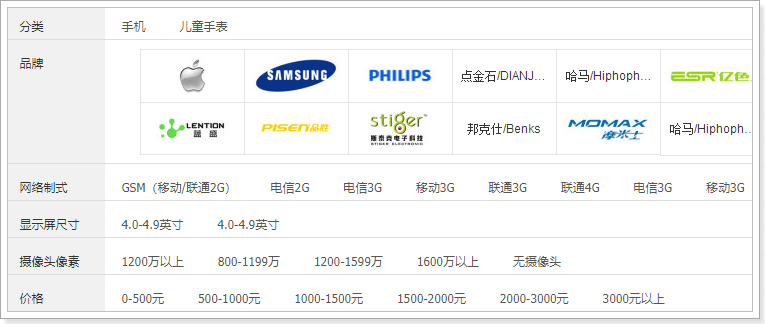
这些过滤条件也都需要存储到索引库中，包括：
商品分类、品牌、可用来搜索的规格参数等
综上所述，我们需要的数据格式有：
spuId、SkuId、商品分类id、品牌id、图片、价格、商品的创建时间、sku信息集、可搜索的规格参数
我们创建一个类，封装要保存到索引库的数据，并设置映射属性：
@Document(indexName = "goods", type = "docs", shards = 1, replicas = 0)
public class Goods {
@Id
private Long id; // spuId
@Field(type = FieldType.Text, analyzer = "ik_max_word")
private String all; // 所有需要被搜索的信息，包含标题，分类，甚至品牌
@Field(type = FieldType.Keyword, index = false)
private String subTitle;// 卖点
private Long brandId;// 品牌id
private Long cid1;// 1级分类id
private Long cid2;// 2级分类id
private Long cid3;// 3级分类id
private Date createTime;// 创建时间
private List<Long> price;// 价格
@Field(type = FieldType.Keyword, index = false)
private String skus;// sku信息的json结构
private Map<String, Object> specs;// 可搜索的规格参数，key是参数名，值是参数值
}一些特殊字段解释：
all：用来进行全文检索的字段，里面包含标题、商品分类信息
price：价格数组，是所有sku的价格集合。方便根据价格进行筛选过滤
skus：用于页面展示的sku信息，不索引，不搜索。包含skuId、image、price、title字段
specs：所有规格参数的集合。key是参数名，值是参数值。
例如：我们在specs中存储 内存：4G,6G，颜色为红色，转为json就是：
{
"specs":{
"内存":[4G,6G],
"颜色":"红色"
}
}当存储到索引库时，elasticsearch会处理为两个字段：
另外， 对于字符串类型，还会额外存储一个字段，这个字段不会分词，用作聚合。
索引库中的数据来自于数据库，我们不能直接去查询商品的数据库，因为真实开发中，每个微服务都是相互独立的，包括数据库也是一样。所以我们只能调用商品微服务提供的接口服务。
先思考我们需要的数据：
SPU信息
SKU信息
SPU的详情
商品分类名称（拼接all字段）
再思考我们需要哪些服务：
因此我们需要额外提供一个查询商品分类名称的接口。
controller：
/**
* 根据商品分类id查询名称
* @param ids 要查询的分类id集合
* @return 多个名称的集合
*/
@GetMapping("names")
public ResponseEntity<List<String>> queryNameByIds(@RequestParam("ids") List<Long> ids){
List<String > list = this.categoryService.queryNameByIds(ids);
if (list == null || list.size() < 1) {
return new ResponseEntity<>(HttpStatus.NOT_FOUND);
}
return ResponseEntity.ok(list);
}测试：
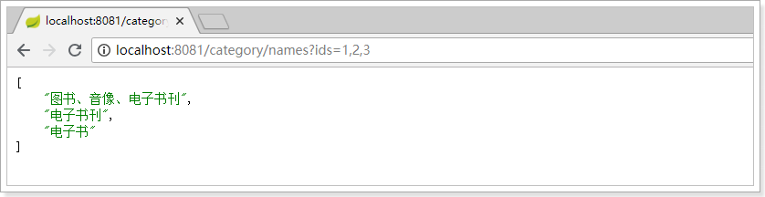
操作leyou-search工程
现在，我们要在搜索微服务调用商品微服务的接口。
第一步要引入商品微服务依赖：leyou-item-interface。
<!--商品微服务-->
<dependency>
<groupId>com.leyou.service</groupId>
<artifactId>ly-item-interface</artifactId>
<version>${leyou.latest.version}</version>
</dependency>第二步，编写FeignClient
@FeignClient(value = "item-service")
@RequestMapping("/goods")
public interface GoodsClient {
/**
* 分页查询商品
* @param page
* @param rows
* @param saleable
* @param key
* @return
*/
@GetMapping("/spu/page")
ResponseEntity<PageResult<SpuBo>> querySpuByPage(
@RequestParam(value = "page", defaultValue = "1") Integer page,
@RequestParam(value = "rows", defaultValue = "5") Integer rows,
@RequestParam(value = "saleable", defaultValue = "true") Boolean saleable,
@RequestParam(value = "key", required = false) String key);
/**
* 根据spu商品id查询详情
* @param id
* @return
*/
@GetMapping("/spu/detail/{id}")
ResponseEntity<SpuDetail> querySpuDetailById(@PathVariable("id") Long id);
/**
* 根据spu的id查询sku
* @param id
* @return
*/
@GetMapping("sku/list")
ResponseEntity<List<Sku>> querySkuBySpuId(@RequestParam("id") Long id);
}以上的这些代码直接从商品微服务中拷贝而来，完全一致。差别就是没有方法的具体实现。大家觉得这样有没有问题？
而FeignClient代码遵循SpringMVC的风格，因此与商品微服务的Controller完全一致。这样就存在一定的问题：
因此，一种比较友好的实践是这样的：
第一步：服务的提供方在leyou-item-interface中提供API接口，并编写接口声明：

商品分类服务接口：
@RequestMapping("category")
public interface CategoryApi {
@GetMapping("names")
ResponseEntity<List<String>> queryNameByIds(@RequestParam("ids") List<Long> ids);
}商品服务接口，返回值不再使用ResponseEntity：
@RequestMapping("/goods")
public interface GoodsApi {
/**
* 分页查询商品
* @param page
* @param rows
* @param saleable
* @param key
* @return
*/
@GetMapping("/spu/page")
PageResult<SpuBo> querySpuByPage(
@RequestParam(value = "page", defaultValue = "1") Integer page,
@RequestParam(value = "rows", defaultValue = "5") Integer rows,
@RequestParam(value = "saleable", defaultValue = "true") Boolean saleable,
@RequestParam(value = "key", required = false) String key);
/**
* 根据spu商品id查询详情
* @param id
* @return
*/
@GetMapping("/spu/detail/{id}")
SpuDetail querySpuDetailById(@PathVariable("id") Long id);
/**
* 根据spu的id查询sku
* @param id
* @return
*/
@GetMapping("sku/list")
List<Sku> querySkuBySpuId(@RequestParam("id") Long id);
}需要引入springMVC及leyou-common的依赖：
<dependency>
<groupId>org.springframework</groupId>
<artifactId>spring-webmvc</artifactId>
<version>5.0.6.RELEASE</version>
</dependency>
<dependency>
<groupId>com.leyou.common</groupId>
<artifactId>leyou-common</artifactId>
<version>1.0.0-SNAPSHOT</version>
</dependency>第二步：在调用方leyou-search中编写FeignClient，但不要写方法声明了，直接继承leyou-item-interface提供的api接口：
商品的FeignClient：
@FeignClient(value = "item-service")
public interface GoodsClient extends GoodsApi {
}商品分类的FeignClient：
@FeignClient(value = "item-service")
public interface CategoryClient extends CategoryApi {
}是不是简单多了？
项目结构：

在leyou-search中引入springtest依赖：
<dependency>
<groupId>org.springframework.boot</groupId>
<artifactId>spring-boot-starter-test</artifactId>
<scope>test</scope>
</dependency>创建测试类：
在接口上按快捷键：Ctrl + Shift + T
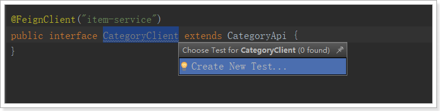
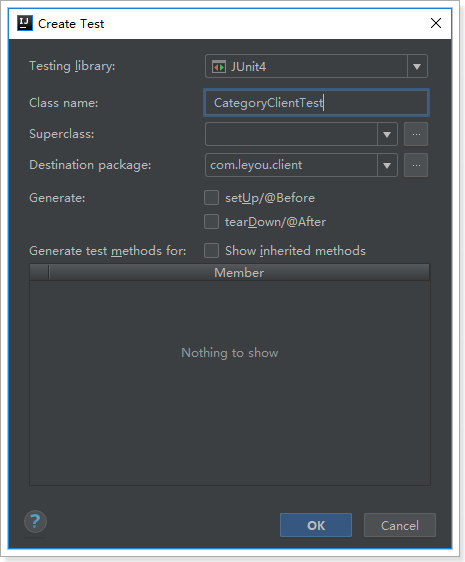
测试代码：
@RunWith(SpringRunner.class)
@SpringBootTest(classes = LeyouSearchApplication.class)
public class CategoryClientTest {
@Autowired
private CategoryClient categoryClient;
@Test
public void testQueryCategories() {
List<String> names = this.categoryClient.queryNameByIds(Arrays.asList(1L, 2L, 3L));
names.forEach(System.out::println);
}
}结果：
导入数据只做一次,以后的更新删除等操作通过消息队列来操作索引库
java代码：
public interface GoodsRepository extends ElasticsearchRepository<Goods, Long> {
}我们新建一个测试类，在里面进行数据的操作：
@RunWith(SpringRunner.class)
@SpringBootTest(classes = LeyouSearchApplication.class)
public class ElasticsearchTest {
@Autowired
private GoodsRepository goodsRepository;
@Autowired
private ElasticsearchTemplate elasticsearchTemplate;
@Test
public void createIndex(){
// 创建索引
this.elasticsearchTemplate.createIndex(Goods.class);
// 配置映射
this.elasticsearchTemplate.putMapping(Goods.class);
}
}通过kibana查看：
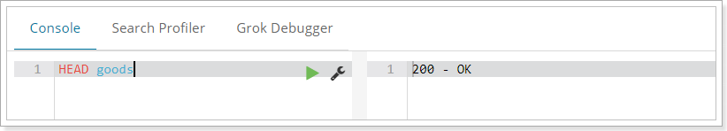
导入数据其实就是查询数据，然后把查询到的Spu转变为Goods来保存，因此我们先编写一个SearchService，然后在里面定义一个方法， 把Spu转为Goods
@Service
public class SearchService {
@Autowired
private CategoryClient categoryClient;
@Autowired
private GoodsClient goodsClient;
@Autowired
private SpecificationClient specificationClient;
private ObjectMapper mapper = new ObjectMapper();
public Goods buildGoods(Spu spu) throws IOException {
Goods goods = new Goods();
// 查询商品分类名称
List<String> names = this.categoryClient.queryNameByIds(Arrays.asList(spu.getCid1(), spu.getCid2(), spu.getCid3()));
// 查询sku
List<Sku> skus = this.goodsClient.querySkuBySpuId(spu.getId());
// 查询详情
SpuDetail spuDetail = this.goodsClient.querySpuDetailById(spu.getId());
// 查询规格参数
List<SpecParam> params = this.specificationClient.querySpecParam(null, spu.getCid3(), true, null);
// 处理sku，仅封装id、价格、标题、图片，并获得价格集合
List<Long> prices = new ArrayList<>();
List<Map<String, Object>> skuList = new ArrayList<>();
skus.forEach(sku -> {
prices.add(sku.getPrice());
Map<String, Object> skuMap = new HashMap<>();
skuMap.put("id", sku.getId());
skuMap.put("title", sku.getTitle());
skuMap.put("price", sku.getPrice());
skuMap.put("image", StringUtils.isBlank(sku.getImages()) ? "" : StringUtils.split(sku.getImages(), ",")[0]);
skuList.add(skuMap);
});
// 处理规格参数
Map<String, Object> genericSpecs = mapper.readValue(spuDetail.getGenericSpec(), new TypeReference<Map<String, Object>>() {
});
Map<String, Object> specialSpecs = mapper.readValue(spuDetail.getSpecialSpec(), new TypeReference<Map<String, Object>>() {
});
// 获取可搜索的规格参数
Map<String, Object> searchSpec = new HashMap<>();
// 过滤规格模板，把所有可搜索的信息保存到Map中
Map<String, Object> specMap = new HashMap<>();
params.forEach(p -> {
if (p.getSearching()) {
if (p.getGeneric()) {
String value = genericSpecs.get(p.getId().toString()).toString();
if(p.getNumeric()){
value = chooseSegment(value, p);
}
specMap.put(p.getName(), StringUtils.isBlank(value) ? "其它" : value);
} else {
specMap.put(p.getName(), specialSpecs.get(p.getId().toString()));
}
}
});
goods.setId(spu.getId());
goods.setSubTitle(spu.getSubTitle());
goods.setBrandId(spu.getBrandId());
goods.setCid1(spu.getCid1());
goods.setCid2(spu.getCid2());
goods.setCid3(spu.getCid3());
goods.setCreateTime(spu.getCreateTime());
goods.setAll(spu.getTitle() + " " + StringUtils.join(names, " "));
goods.setPrice(prices);
goods.setSkus(mapper.writeValueAsString(skuList));
goods.setSpecs(specMap);
return goods;
}
}因为过滤参数中有一类比较特殊，就是数值区间：
所以我们在存入时要进行处理：
private String chooseSegment(String value, SpecParam p) {
double val = NumberUtils.toDouble(value);
String result = "其它";
// 保存数值段
for (String segment : p.getSegments().split(",")) {
String[] segs = segment.split("-");
// 获取数值范围
double begin = NumberUtils.toDouble(segs[0]);
double end = Double.MAX_VALUE;
if(segs.length == 2){
end = NumberUtils.toDouble(segs[1]);
}
// 判断是否在范围内
if(val >= begin && val < end){
if(segs.length == 1){
result = segs[0] + p.getUnit() + "以上";
}else if(begin == 0){
result = segs[1] + p.getUnit() + "以下";
}else{
result = segment + p.getUnit();
}
break;
}
}
return result;
}然后编写一个测试类，循环查询Spu，然后调用IndexService中的方法，把SPU变为Goods，然后写入索引库：
@Test
public void loadData(){
// 创建索引
this.elasticsearchTemplate.createIndex(Goods.class);
// 配置映射
this.elasticsearchTemplate.putMapping(Goods.class);
int page = 1;
int rows = 100;
int size = 0;
do {
// 查询分页数据
PageResult<SpuBo> result = this.goodsClient.querySpuByPage(page, rows, true, null);
List<SpuBo> spus = result.getItems();
size = spus.size();
// 创建Goods集合
List<Goods> goodsList = new ArrayList<>();
// 遍历spu
for (SpuBo spu : spus) {
try {
Goods goods = this.searchService.buildGoods(spu);
goodsList.add(goods);
} catch (Exception e) {
break;
}
}
this.goodsRepository.saveAll(goodsList);
page++;
} while (size == 100);
}通过kibana查询， 可以看到数据成功导入：
在首页的顶部，有一个输入框：
当我们输入任何文本，点击搜索，就会跳转到搜索页search.html了：
并且将搜索关键字以请求参数携带过来：
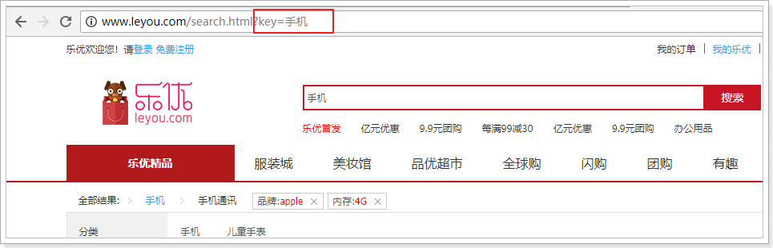
我们打开search.html，在最下面会有提前定义好的Vue实例：
<script type="text/javascript">
var vm = new Vue({
el: "#searchApp",
data: {
},
components:{
// 加载页面顶部组件
lyTop: () => import("./js/pages/top.js")
}
});
</script>这个Vue实例中，通过import导入的方式，加载了另外一个js：top.js并作为一个局部组件。top其实是页面顶部导航组件，我们暂时不管
要想在页面加载后，就展示出搜索结果。我们应该在页面加载时，获取地址栏请求参数，并发起异步请求，查询后台数据，然后在页面渲染。
我们在data中定义一个对象，记录请求的参数：
data: {
search:{
key:"", // 搜索页面的关键字
}
}我们通过钩子函数created，在页面加载时获取请求参数，并记录下来。
created(){
// 判断是否有请求参数
if(!location.search){
return;
}
// 将请求参数转为对象
const search = ly.parse(location.search.substring(1));
// 记录在data的search对象中
this.search = search;
// 发起请求，根据条件搜索
this.loadData();
}然后发起请求，搜索数据。
methods: {
loadData(){
// ly.http.post("/search/page", ly.stringify(this.search)).then(resp=>{
ly.http.post("/search/page", this.search).then(resp=>{
console.log(resp);
});
}
}ly是common.js中定义的工具对象。在leyou-gateway中，添加允许信任域名：
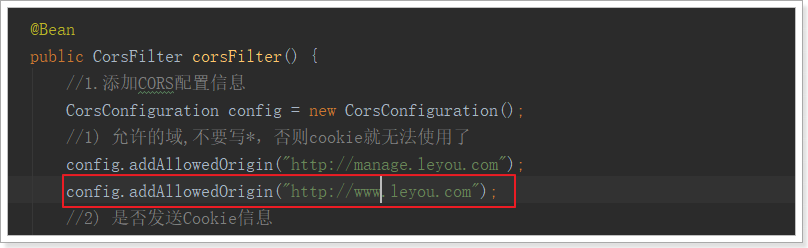
并添加网关映射：
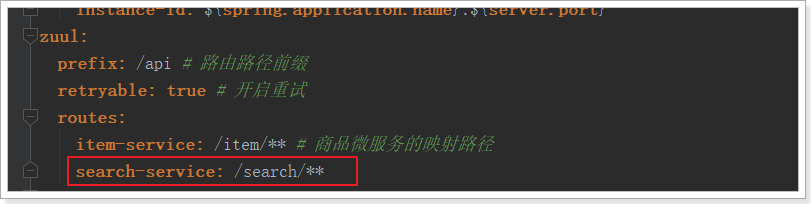
刷新页面试试：
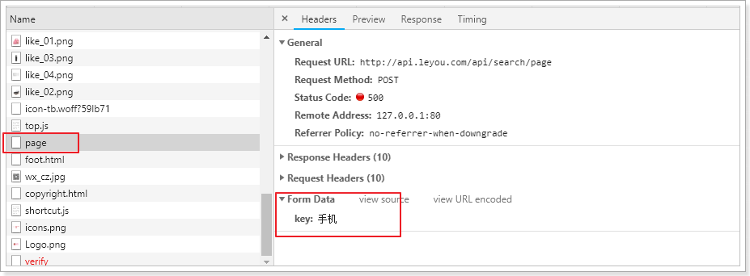
因为后台没有提供接口，所以无法访问。没关系，接下来我们实现后台接口
首先分析几个问题：
请求方式：Post
请求路径：/search/page，不过前面的/search应该是网关的映射路径，因此真实映射路径page，代表分页查询
请求参数：json格式，目前只有一个属性：key-搜索关键字，但是搜索结果页一定是带有分页查询的，所以将来肯定会有page属性，因此我们可以用一个对象来接收请求的json数据：
public class SearchRequest {
private String key;// 搜索条件
private Integer page;// 当前页
private static final Integer DEFAULT_SIZE = 20;// 每页大小，不从页面接收，而是固定大小
private static final Integer DEFAULT_PAGE = 1;// 默认页
public String getKey() {
return key;
}
public void setKey(String key) {
this.key = key;
}
public Integer getPage() {
if(page == null){
return DEFAULT_PAGE;
}
// 获取页码时做一些校验，不能小于1
return Math.max(DEFAULT_PAGE, page);
}
public void setPage(Integer page) {
this.page = page;
}
public Integer getSize() {
return DEFAULT_SIZE;
}
}返回结果：作为分页结果，一般都两个属性：当前页数据、总条数信息，我们可以使用之前定义的PageResult类
代码：
@RestController
@RequestMapping
public class SearchController {
@Autowired
private SearchService searchService;
/**
* 搜索商品
*
* @param request
* @return
*/
@PostMapping("page")
public ResponseEntity<PageResult<Goods>> search(@RequestBody SearchRequest request) {
PageResult<Goods> result = this.searchService.search(request);
if (result == null) {
return new ResponseEntity<>(HttpStatus.NOT_FOUND);
}
return ResponseEntity.ok(result);
}
}@Service
public class SearchService {
@Autowired
private GoodsRepository goodsRepository;
public PageResult<Goods> search(SearchRequest request) {
String key = request.getKey();
// 判断是否有搜索条件，如果没有，直接返回null。不允许搜索全部商品
if (StringUtils.isBlank(key)) {
return null;
}
// 构建查询条件
NativeSearchQueryBuilder queryBuilder = new NativeSearchQueryBuilder();
// 1、对key进行全文检索查询
queryBuilder.withQuery(QueryBuilders.matchQuery("all", key).operator(Operator.AND));
// 2、通过sourceFilter设置返回的结果字段,我们只需要id、skus、subTitle
queryBuilder.withSourceFilter(new FetchSourceFilter(
new String[]{"id","skus","subTitle"}, null));
// 3、分页
// 准备分页参数
int page = request.getPage();
int size = request.getSize();
queryBuilder.withPageable(PageRequest.of(page - 1, size));
// 4、查询，获取结果
Page<Goods> pageInfo = this.goodsRepository.search(queryBuilder.build());
// 封装结果并返回
return new PageResult<>(goodsPage.getTotalElements(), goodsPage.getTotalPages(), goodsPage.getContent());
}
}注意点：我们要设置SourceFilter，来选择要返回的结果，否则返回一堆没用的数据，影响查询效率。
刷新页面测试：
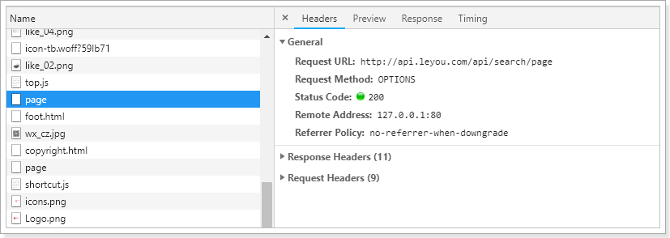
数据是查到了，但是因为我们只查询部分字段，所以结果json 数据中有很多null，这很不优雅。
解决办法很简单，在leyou-search的application.yml中添加一行配置，json处理时忽略空值：
spring:
jackson:
default-property-inclusion: non_null # 配置json处理时忽略空值结果：
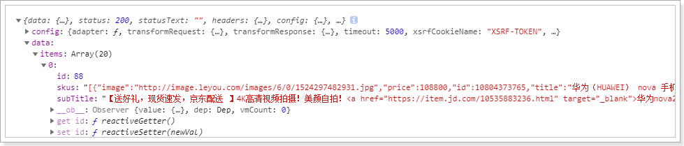
页面已经拿到了结果，接下来就要渲染样式了。
首先，在data中定义属性，保存搜索的结果：

在loadData的异步查询中，将结果赋值给goodsList：
在search.html的中部，有一个div，用来展示所有搜索到的商品：
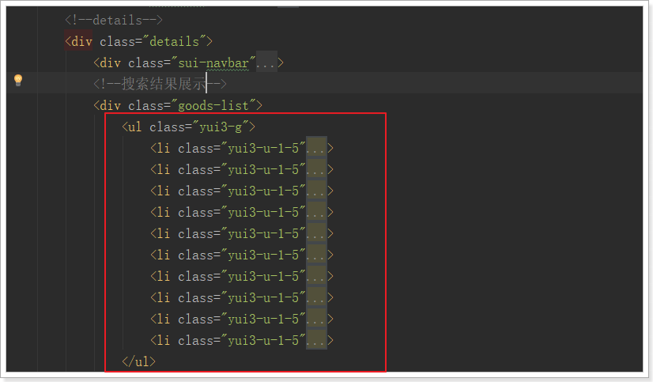
可以看到，div中有一个无序列表ul，内部的每一个li就是一个商品spu了。
我们删除多余的，只保留一个li，然后利用vue的循环来展示搜索到的结果：
接下来展示具体的商品信息，来看图：
这里我们可以发现，一个商品位置，是多个sku的信息集合。当用户鼠标选择某个sku，对应的图片、价格、标题会随之改变！
我们先来实现sku的选择，才能去展示不同sku的数据。

可以看到，在列表中默认第一个是被选中的，那我们就需要做两件事情：
在搜索到数据时，先默认把第一个sku作为被选中的，记录下来
记录当前被选中的是哪一个sku，记录在哪里比较合适呢？显然是遍历到的goods对象自己内部，因为每一个goods都会有自己的sku信息。
查询出的结果集skus是一个json类型的字符串，不是js对象
我们在查询成功的回调函数中，对goods进行遍历，把skus转化成对象，并添加一个selected属性保存被选中的sku：
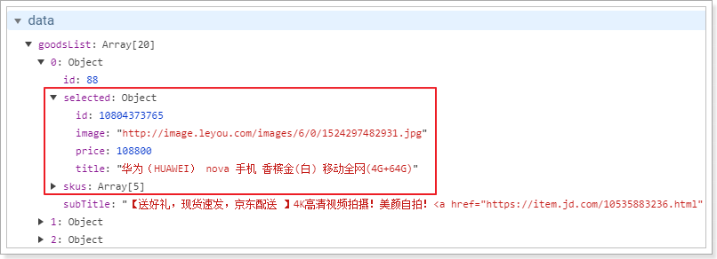
接下来，我们看看多个sku的图片列表位置：
看到又是一个无序列表，这里我们也一样删掉多余的，保留一个li，需要注意选中的项有一个样式类：selected
我们的代码：
<!--多sku图片列表-->
<ul class="skus">
<li :class="{selected: sku.id == goods.selected.id}" v-for="sku in goods.skus" :key="sku.id"
@mouseEnter="goods.selected=sku">
<img :src="sku.image">
</li>
</ul>注意：
现在，我们已经可以通过goods.selected获取用户选中的sku，那么我们就可以在页面展示了：
刷新页面：
看起来很完美是吧！
但其实有一些瑕疵
首先价格显示就不正确，我们数据库中存放的是以分为单位，所以这里要格式化。
好在我们之前common.js中定义了工具类，可以帮我们转换。
改造：

结果报错：

为啥？
因为在Vue范围内使用任何变量，都会默认去Vue实例中寻找，我们使用ly，但是Vue实例中没有这个变量。所以解决办法就是把ly记录到Vue实例：

然后刷新页面：
标题内容太长了，已经无法完全显示，怎么办？
截取一下：

最好在加个悬停展示所有内容的效果
还有一个错误比较隐蔽，不容易被发现。我们点击sku 的图片列表，发现没有任何变化。
这不科学啊，为什么？
通过控制台观察，发现数据其实是变化了，但是Vue却没有重新渲染视图。
这是因为Vue的自动渲染是基于对象的属性变化的。比如页面使用GoodsList进行渲染，如果GoodsList变化，或者其内部的任何子对象变化，都会Vue感知，从而从新渲染页面。
然而，这一切有一个前提，那就是当你第一次渲染时，对象中有哪些属性，Vue就只监视这些属性，后来添加的属性发生改变，是不会被监视到的。
而我们的goods对象中，本身是没有selected属性的，是我们后来才添加进去的：
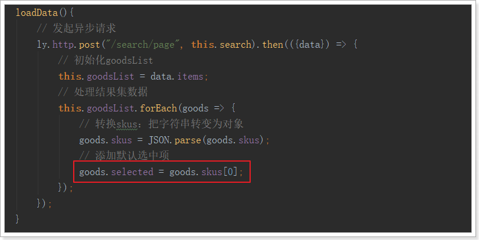
这段代码稍微改造一下，即可：
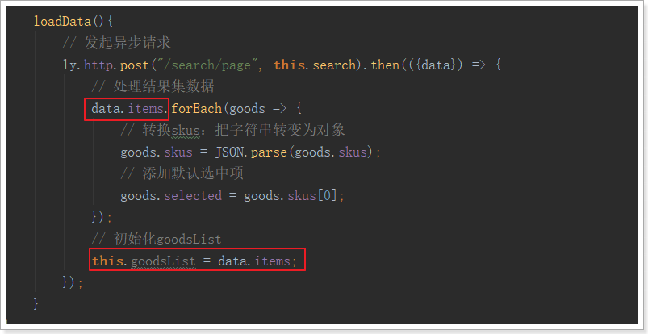
也就是说，我们先把selected属性初始化完毕，然后才把整个对象赋值给goodsList，这样，goodsList已初始化时就有selected属性，以后就会被正常监控了。
刚才的查询中，我们默认了查询的页码和每页大小，因此所有的分页功能都无法使用，接下来我们一起看看分页功能条该如何制作。
这里要分两步，
先看下页面关于分页部分的代码：

可以看到所有的分页栏内容都是写死的。
分页数据应该是根据总页数、当前页、总条数等信息来计算得出。
我们首先在data中记录下这几个值：page-当前页，total-总条数，totalPage-总页数
data: {
ly,
search:{
key: "",
page: 1
},
goodsList:[], // 接收搜索得到的结果
total: 0, // 总条数
totalPage: 0 // 总页数
}因为page是搜索条件之一，所以记录在search对象中。
要注意：我们在created钩子函数中，会读取url路径的参数，然后赋值给search。如果是第一次请求页面，page是不存在的。因此为了避免page被覆盖，我们应该这么做：
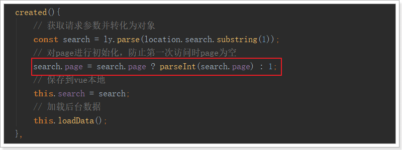
不过，这个时候我们自己的search对象中的值就可有可无了
后台返回的结果中，要包含total和totalPage，我们改造下刚才的接口：
在我们返回的PageResult对象中，其实是有totalPage字段的：

我们在返回时，把这个值填上：

页面测试一下：
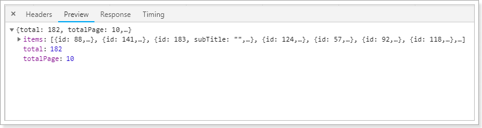
OK
首先，把后台提供的数据保存在data中：

然后看下我们要实现的效果：

这里最复杂的是中间的1~5的分页按钮，它需要动态变化。
思路分析：
v-for循环从1到5即可所以，我们的页面这样来做：
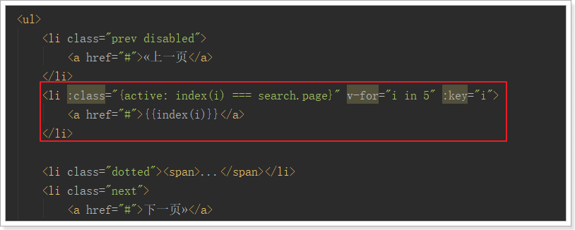
a标签中的分页数字通过index函数来计算，需要把i传递过去：
index(i){
if(this.search.page <= 3 || this.totalPage <= 5){
// 如果当前页小于等于3或者总页数小于等于5
return i;
} else if(this.search.page > 3) {
// 如果当前页大于3
return this.search.page - 3 + i;
} else {
return this.totalPage - 5 + i;
}
}需要注意的是，如果总页数不足5页，我们就不应该遍历1~5，而是1~总页数，稍作改进：
分页条的其它部分就比较简单了：
<div class="sui-pagination pagination-large">
<ul style="width: 550px">
<li :class="{prev:true,disabled:search.page === 1}">
<a href="#">«上一页</a>
</li>
<li :class="{active: index(i) === search.page}" v-for="i in Math.min(5,totalPage)" :key="i">
<a href="#">{{index(i)}}</a>
</li>
<li class="dotted" v-show="totalPage > 5"><span>...</span></li>
<li :class="{next:true,disabled:search.page === totalPage}">
<a href="#">下一页»</a>
</li>
</ul>
<div>
<span>共{{totalPage}}页 </span>
<span>
到第
<input type="text" class="page-num" :value="search.page">
页 <button class="page-confirm" onclick="alert(1)">确定</button>
</span>
</div>
</div>点击分页按钮后，自然是要修改page的值
所以，我们在上一页、下一页按钮添加点击事件，对page进行修改，在数字按钮上绑定点击事件，点击直接修改page：
prevPage(){
if(this.search.page > 1){
this.search.page--
}
},
nextPage(){
if(this.search.page < this.totalPage){
this.search.page++
}
}当page发生变化，我们应该去后台重新查询数据。
不过，如果我们直接发起ajax请求，那么浏览器的地址栏中是不会有变化的，没有记录下分页信息。如果用户刷新页面，那么就会回到第一页。
这样不太友好，我们应该把搜索条件记录在地址栏的查询参数中。
因此，我们监听search的变化，然后把search的过滤字段拼接在url路径后：
watch:{
search:{
deep:true,
handler(val){
// 把search对象变成请求参数，拼接在url路径
window.location.href = "http://www.leyou.com/search.html?" + ly.stringify(val);
}
}
},刷新页面测试，然后就出现重大bug：页面无限刷新！为什么？
因为Vue实例初始化的钩子函数中，我们读取请求参数，赋值给search的时候，也触发了watch监视！也就是说，每次页面创建完成，都会触发watch，然后就会去修改window.location路径，然后页面被刷新，再次触发created钩子，又触发watch，周而复始，无限循环。
所以，我们需要在watch中进行监控，如果发现是第一次初始化，则不继续向下执行。
那么问题是，如何判断是不是第一次？
第一次初始化时，search中的key值肯定是空的，所以，我们这么做：
watch:{
search:{
deep:true,
handler(val,old){
if(!old || !old.key){
// 如果旧的search值为空，或者search中的key为空，证明是第一次
return;
}
// 把search对象变成请求参数，拼接在url路径
window.location.href = "http://www.leyou.com/search.html?" + ly.stringify(val);
}
}
}再次刷新，OK了！
在页面商品列表的顶部，也有一个分页条：

我们把这一部分，也加上点击事件：
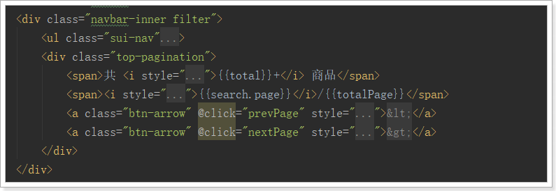
在搜索商品列表的顶部，有这么一部分内容：
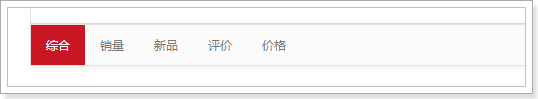
这是用来做排序的，默认按照综合排序。点击新品，应该按照商品创建时间排序，点击价格应该按照价格排序。因为我们没有统计销量和评价，这里咱们以新品和价格为例，进行讲解，做法是想通的。
排序需要知道两个内容：
因此，我们首先在search中记录这两个信息，因为created钩子函数会对search进行覆盖，因此我们在钩子函数中对这两个信息进行初始化即可：
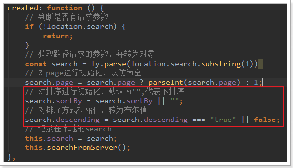
然后，在页面上给按钮绑定点击事件，修改sortBy和descending的值：
<!--排序字段-->
<ul class="sui-nav">
<li :class="{active:!search.sortBy}" @click="search.sortBy=''">
<a href="#">综合</a>
</li>
<li>
<a href="#">销量</a>
</li>
<li @click="search.sortBy='createTime'" :class="{active: search.sortBy==='createTime'}">
<a href="#">新品</a>
</li>
<li>
<a href="#">评价</a>
</li>
<li @click="search.sortBy='price'; search.descending = !search.descending"
:class="{active: search.sortBy==='price'}">
<a href="#">
价格
<v-icon v-show="search.descending">arrow_drop_down</v-icon>
<v-icon v-show="!search.descending">arrow_drop_up</v-icon>
</a>
</li>
</ul>可以看到，页面请求参数中已经有了排序字段了：
接下来，后台需要接收请求参数中的排序信息，然后在搜索中加入排序的逻辑。
现在，我们的请求参数对象SearchRequest中，只有page、key两个字段。需要进行扩展：
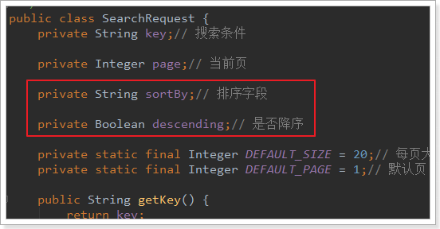
然后在搜索业务逻辑中，添加排序条件：
注意，因为我们存储在索引库中的的价格是一个数组，因此在按照价格排序时，会进行智能处理：
Edit By MaHua